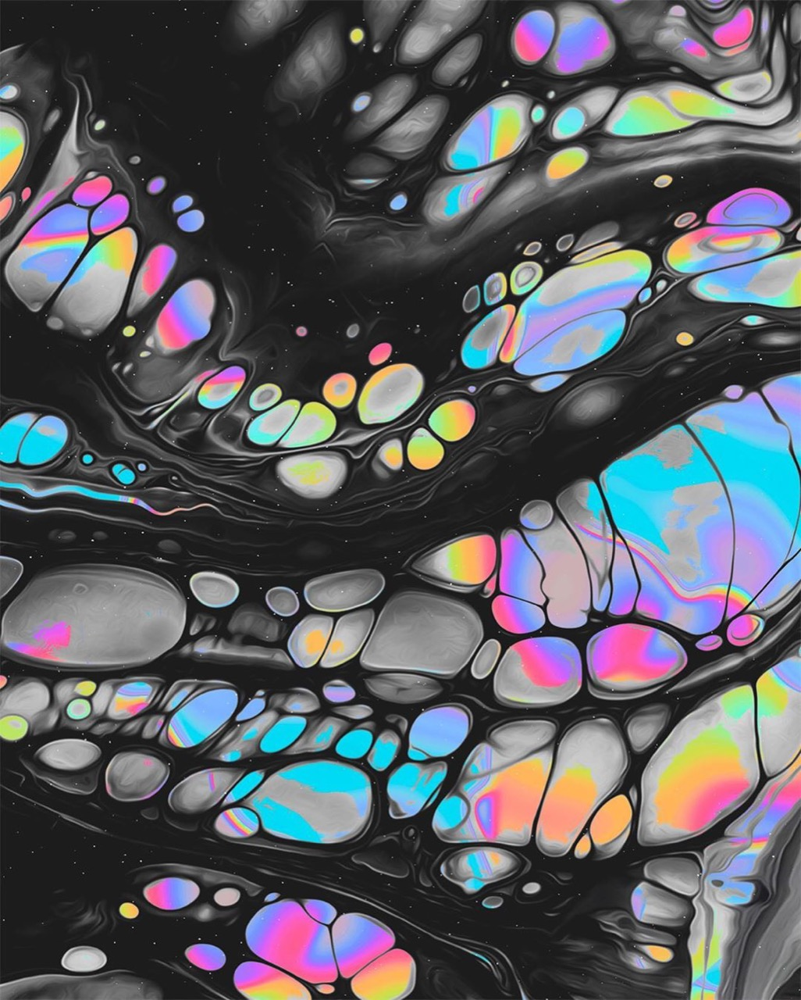

Travel photography documents geographic locations, cultural practices, and human experiences across diverse global contexts, functioning simultaneously as personal expression and cross-cultural communication. Travel photographers engage with unfamiliar environments and cultural contexts, creating images that celebrate human diversity while raising complex questions regarding representation, otherness, and photographic ethics. Contemporary travel photography increasingly emphasizes collaborative relationships with local communities and respectful engagement with cultural contexts rather than extractive documentation. The genre encompasses documentary approaches, artistic interpretation, and commercial travel promotion, demonstrating photography's multiple roles within contemporary visual culture.
Alycia Rainaud’s Digital Art Is Utterly Mesmerizing

Previous articleNow Is the Time for Arts and Crafts